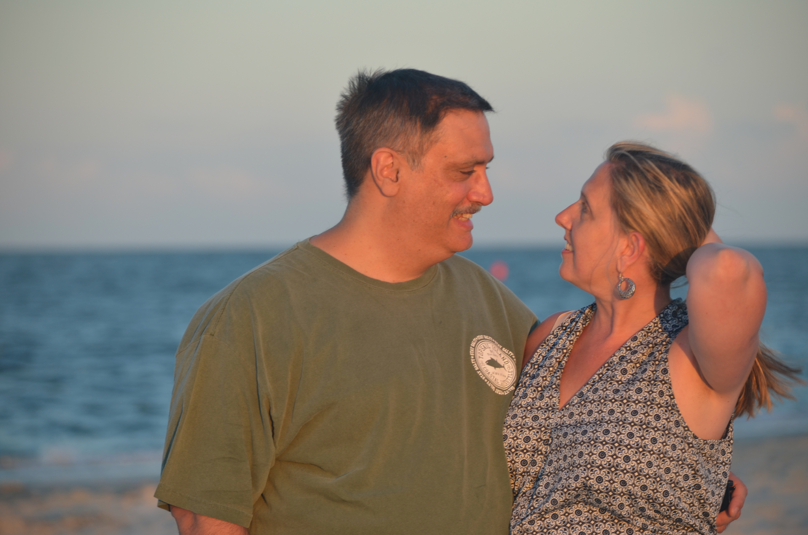
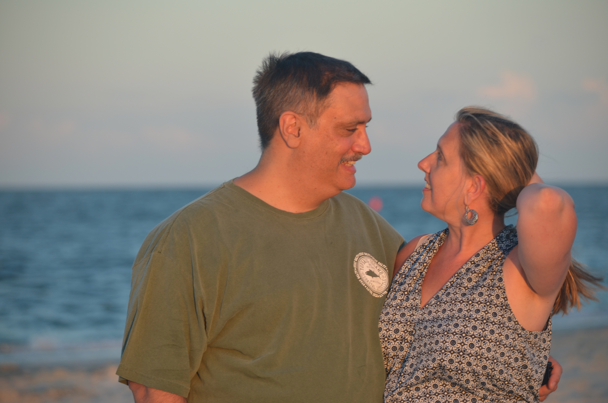

I am a junior in the Deitrich School of Arts and Sciences at the University of Pittsburgh. My hope is to attend Pitt's Master of Arts in Teaching English program after my undergraduate work. I want to make a difference in the lives of kids and be like the teachers who made an impact on MY life. I love doing art in my free time and even run my own art Instagram and do commissions for people! See here.
 



My family means the world to me, and I was raised very close with my parents and three brothers. I am the second oldest, at age 20. My older brother Andrew is 24 and my younger brothers Nicholas and Luke are 18 and 16 years old. I treasure the time that I spend with my brothers, and even though two of us are no longer living in our childhood home because we are older, we make a huge effort to find a way to spend time there all together. While the pandemic has been hard for everyone in the world, one blessing that came out of it is that my family was able to spend a lot of time as a whole with all 6 of us. School was online and so was work, so we all spent our days on our computers and our nights laughing around the kitchen table. This is time that none of us ever thought we would get to have in our home all together again and that none of us will ever forget. My home is wherever they are. Whether that is in the suburbs of Pittsburgh or at a rental house in Topsail Island, North Carolina in the summers (our favorite place to vacation to), it does not matter where we are so long as we are together.